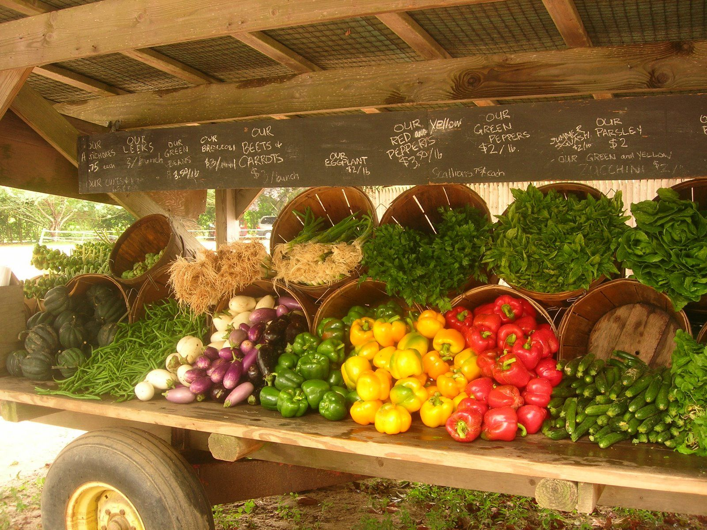

THE MOST PEOPLE, IT'S DIRT
THE FARMING IS PART OF US.
Agriculture encompasses crop and livestock production, aquaculture, fisheries and forestry for food and non-food products. Agriculture was the key development in the rise of sedentary human civilization, whereby farming of domesticated species created food surpluses that enabled people to live in cities. The Industrial Revolution led to faster and more efficient farming technology, which helped usher in the Second Agricultural Revolution from 1700 to 1900 in developed countries.Taking root around 12,000 years ago, agriculture triggered such a change in society and the way in which people lived that its development has been dubbed the “ Neolithic Revolution.”
Agricultural and Farming Services Information
Agricultural and Farming services provide information, consulting, equipment, and supplies to the agricultural industry. Examples include government agricultural extensions, crop brokers and shippers, meat packers, produce distributors and wholesalers, and veterinarians.
Vegetables List and Their Price
- Rate On 1 KG
- Potato =45 RS
- Onion =20 RS
- Capsicum = 25 RS
- Gourd =15 RS
- Green Bean =20 RS
- Pumpkin =55 RS
- Broccoli =15 RS
- Brinjal =25 RS
- Drumstic =15 RS
About US
we are passionate about agriculture and committed to providing top-notch farming services to farmers and agricultural businesses. With years of experience and a team of skilled professionals, we aim to revolutionize the farming industry by offering innovative and sustainable solutions.
Our Mission:
We strive to empower farmers and contribute to the development of a thriving agricultural sector. Our mission is to enhance productivity, promote environmental sustainability, and improve the livelihoods of farmers through our comprehensive range of farming services.